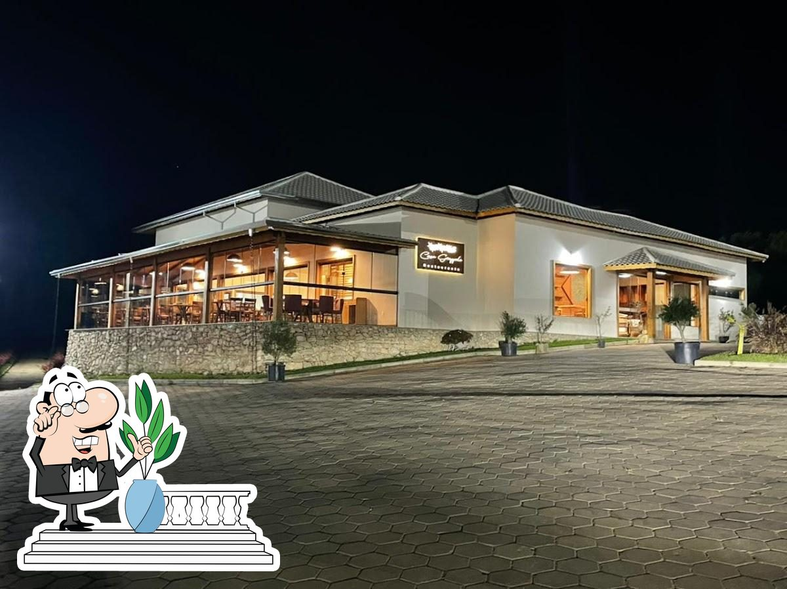
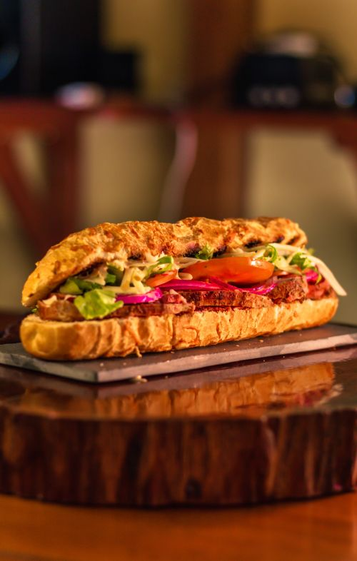

POSTAGEM 1
2024
O Circuito Gastronômico Comidas de Maria é um projeto pioneiro em nossa região e tem como foco apresentar aos marienses e visitantes o que de melhor nossa culinária pode oferecer. Em parceria o Sebrae minas e o Chef Vinicius Curtts foi realizada uma consultoria individualizada em oito empreendimentos gastronômicos de Maria da Fé. A partir disso foram criados pratos exclusivos e foi modelado um produto no formato de circuito para que você possa experimentar variadas opções da nossa cozinha.
Leia Mais...
POSTAGEM 2
2024
A Quinta Mineiro em Maria da Fé é um lugar encantador e acolhedor, situado em meio à natureza exuberante da região. Com paisagens deslumbrantes e um clima agradável, é o local perfeito para relaxar e desfrutar de momentos de tranquilidade. A propriedade conta com instalações bem cuidadas e charmosas, proporcionando uma experiência única aos visitantes. Além disso, a hospitalidade dos anfitriões e a culinária local deliciosa tornam a estadia ainda mais especial. Se você busca um refúgio para recarregar as energias e se reconectar com a natureza, a Quinta Mineiro em Maria da Fé é o destino ideal.
Leia Mais...
POSTAGEM 3
2024

A Casa Grappolo em Maria da Fé é um local encantador e acolhedor, conhecido por sua atmosfera tranquila e charmosa. Localizada em meio à natureza exuberante da região, a Casa Grappolo oferece aos visitantes uma experiência única de hospedagem. Com instalações bem cuidadas e aconchegantes, os hóspedes podem desfrutar de momentos de relaxamento e conforto. A hospitalidade dos anfitriões e a culinária local deliciosa contribuem para tornar a estadia ainda mais especial. Se você procura um refúgio para se desconectar da rotina e aproveitar a beleza natural, a Casa Grappolo em Maria da Fé é o lugar perfeito para isso.
Leia Mais...
POSTAGEM 4
2024

A Oincs Hamburgueria em Maria da Fé é um lugar acolhedor e charmoso, onde você pode desfrutar de deliciosas opções como a Baquete Acém Burnt Ends. Este hambúrguer especial é feito com cubos de acém lentamente defumados e assados na churrasqueira, garantindo um sabor único que só a Oincs pode oferecer. Com a adição do famoso American Cheese e uma salada fresca, cada mordida é uma explosão de sabores que elevam o paladar. Venha se deliciar com essa experiência gastronômica única em um ambiente acolhedor e acolhedor na Oincs Hamburgueria em Maria da Fé.
Leia Mais...